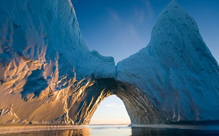

Освоение Арктики
Долгое время Арктика считалась территорией, не приспособленной для жизни людей («мёртвая земля»), непроходимой ни водным, ни наземным путём.
В XI веке русские мореплаватели вышли в моря Северного Ледовитого океана. В XII—XIII веках открыли острова Вайгач, Новая Земля, а в конце XV века — острова архипелага Шпицберген, остров Медвежий. В первой половине XVI века появилась первая карта бассейна Ледовитого океана, составленная по чертежу Д. Герасимова, к этому же времени относится и освоение западного участка Северного морского пути — от Северной Двины до Тазовской губы в устье Оби (так называемый «мангазейский морской ход»).
К 30-40 гг. XVII века относится освоение русскими первопроходцами, Иваном Ребровым, Ильёй Перфильевым, Михаилом Стадухиным, восточного участка Северного морского пути — от устья Лены до устья Колымы. Семён Дежнёв прошёл морем от устья Колымы до самой восточной точки материка и в 1648 году открыл пролив между Азией и Америкой.
В результате Великой северной экспедиции (1733—1743) всё сибирское побережье Северного Ледовитого океана до мыса Большой Баранов было исследовано, описано и нанесено на карты.
Норвежский полярный исследователь Фритьоф Нансен называл Арктику «Страной ледяного ужаса».
Огромную роль в освоении Арктики сыграл Северный морской путь.
Дрейфующие полярные станции
Россия — первая страна, использующая так называемые дрейфующие полярные станции. Каждая такая станция представляет собой установленный на дрейфующей арктической льдине комплекс станционных домиков, в которых живут участники экспедиций, и необходимого оборудования. Впервые такой дешёвый и эффективный способ исследования Арктики предложил в 1929 году Владимир Визе, исследователь, работавший в Арктическом и антарктическом научно-исследовательском институте. Благодаря существованию дрейфующих станций российские учёные получили возможность исследовать Арктику круглый год.
Первая дрейфующая экспедиция под названием «Северный полюс» была высажена у полюса 21 мая 1937 года.
Данные, получаемые во время экспедиций, расширяют знания учёных о процессах, происходящих в природной среде Центральной Арктики, и помогут объяснить причины глобальных климатических изменений.
Путь к Северному полюсу проложили флагман российского научного полярного флота «Академик Фёдоров» и атомный ледокол «Россия». 2 августа в самой северной точке Земли было совершено погружение на глубину до 4200 м на глубоководных обитаемых аппаратах «Мир-1» и «Мир-2». Во время этого погружения человек впервые достиг дна океана под Северным полюсом. Там командой аппарата «Мир-1» был установлен флаг России, сделанный для долговечности из титанового сплава.